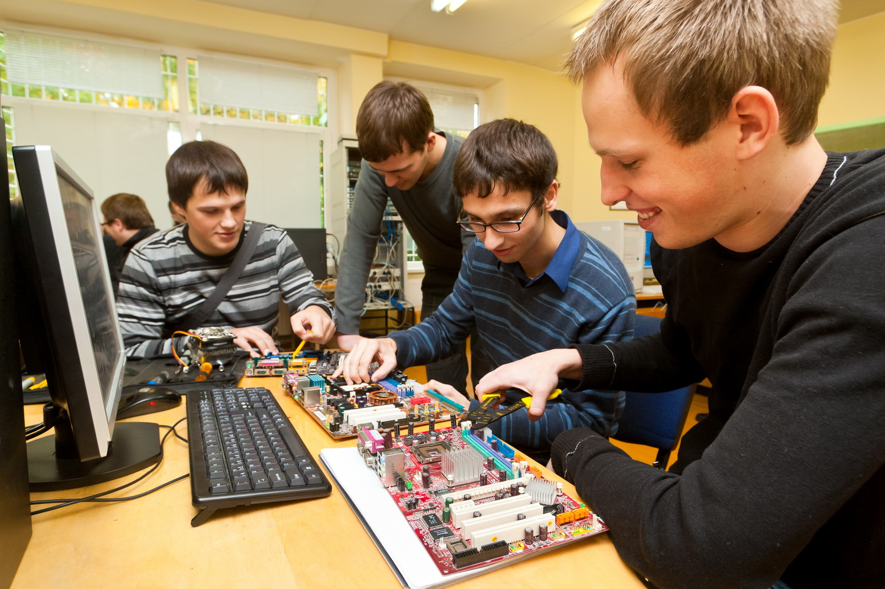

รู้จักคณะสาขา

คุณสมบัติ
1. ผู้สำเร็จการศึกษาชั้นมัธยมศึกษาตอนปลาย สายวิทยาศาสตร์ – คณิตศาสตร์
2. ผู้สำเร็จการศึกษาหลักสูตรการศึกษานอกโรงเรียน (กศน.) ให้ศึกษารายวิชาต่างๆ เทียบเท่าเกณฑ์หลักสูตรการศึกษาในโรงเรียน สำหรับหมวดวิชาวิทยาศาสตร์ให้แสดงหลักฐานว่าได้ศึกษาภาคปฏิบัติการเทียบเท่า หลักสูตรการศึกษาในโรงเรียน
3. ผู้สำเร็จการศึกษาหลักสูตรประกาศนียบัตรวิชาชีพ ประเภทช่างอุตสาหกรรม(คอมพิวเตอร์)
แนวทางการประกอบอาชีพ
- สามารถทำงานในส่วนที่เป็นธุรกิจที่เกี่ยวข้องกับเทคโลยีสารสนเทศ
- สามารถพัฒนาโปรแกรมด้านธุรกิจ มีความเชี่ยวชาญในการเขียน และบริหารจัดการขั้นตอนการพัฒนาโปรแกรมในขั้นตอนต่างๆ
- สามารถออกแบบ ติดตั้ง บริหาร จัดการและปรับปรุงประสิทธิภาพของระบบเครือข่ายและระบบคอมพิวเตอร์
- สามารถก้าวไปสู่การเป็นผู้บริหารในด้านเทคโนโลยีสารสนเทศขององค์กรต่างๆ รวมทั้งสามารถสร้างกิจการ SME ได้
มหาวิทยาลัยที่เปิดสอน
| # | มหาวิทยาลัย | คณะ/สาขา |
|---|---|---|
| 1 | มหาวิทยาลัยศรีปทุม | คณะเทคโนโลยีสารสนเทศ สาขาวิศวกรรมคอมพิวเตอร์  |
| 2 | มหาวิทยาลัยนครพนม | คณะเทคโนโลยีอุตสาหกรรม สาขาวิศวกรรมคอมพิวเตอร์ |
| 3 | มหาวิทยาลัยนเรศวร | คณะวิศวกรรมศาสตร์ สาขาวิศวกรรมคอมพิวเตอร์ |
| 4 | มหาวิทยาลัยสงขลานครินทร์ | คณะวิศวกรรมศาสตร์ สาขาวิศวกรรมคอมพิวเตอร์ |
| 5 | มหาวิทยาลัยสงขลานครินทร์ วิทยาเขตภูเก็ต | คณะวิศวกรรมศาสตร์ สาขาวิศวกรรมคอมพิวเตอร์ |
| 6 | มหาวิทยาลัยราชภัฏกาฬสินธุ์ | คณะอุตสาหกรรมสร้างสรรค์ สาขาวิศวกรรมคอมพิวเตอร์แอนิเมชันและเกม |
| 7 | มหาวิทยาลัยราชภัฏกาฬสินธุ์ | คณะอุตสาหกรรมสร้างสรรค์ สาขาวิศวกรรมคอมพิวเตอร์ |
| 8 | มหาวิทยาลัยราชภัฏเชียงราย | สำนักวิชาคอมพิวเตอร์และเทคโนโลยีสารสนเทศ สาขาวิศวกรรมคอมพิวเตอร์ |
| 9 | มหาวิทยาลัยราชภัฏเทพสตรี | คณะเทคโนโลยีอุตสาหกรรม สาขาวิศวกรรมคอมพิวเตอร์ |
| 10 | มหาวิทยาลัยราชภัฏเพชรบูรณ์ | คณะเทคโนโลยีการเกษตร สาขาวิศวกรรมคอมพิวเตอร์ |
| 11 | มหาวิทยาลัยราชภัฏสวนสุนันทา | คณะเทคโนโลยีอุตสาหกรรม สาขาวิศวกรรมคอมพิวเตอร์ |
| 12 | มหาวิทยาลัยราชภัฏอุตรดิตถ์ | คณะเทคโนโลยีอุตสาหกรรม สาขาวิศวกรรมคอมพิวเตอร์ |
| 13 | มหาวิทยาลัยราชภัฏอุบลราชธานี | คณะเทคโนโลยีอุตสาหกรรม สาขาวิศวกรรมคอมพิวเตอร์และเครือข่าย |
| 14 | มหาวิทยาลัยเทคโนโลยีราชมงคลธัญบุรี | คณะครุศาสตร์อุตสาหกรรม สาขาวิศวกรรมคอมพิวเตอร์ |
| 15 | มหาวิทยาลัยเทคโนโลยีราชมงคลธัญบุรี | คณะวิศวกรรมศาสตร์ สาขาวิศวกรรมคอมพิวเตอร์ |
| 16 | มหาวิทยาลัยเทคโนโลยีราชมงคลพระนคร | คณะครุศาสตร์อุตสาหกรรม สาขาวิศวกรรมคอมพิวเตอร์ |
| 17 | มหาวิทยาลัยเทคโนโลยีราชมงคลพระนคร | คณะวิศวกรรมศาสตร์ สาขาวิศวกรรมคอมพิวเตอร์ |
| 18 | มหาวิทยาลัยเทคโนโลยีราชมงคลรัตนโกสินทร์ วิทยาเขตวังไกลกังวล | คณะอุตสาหกรรมและเทคโนโลยี สาขาเทคโนโลยีวิศวกรรมคอมพิวเตอร์ |
| 19 | มหาวิทยาลัยเทคโนโลยีราชมงคลรัตนโกสินทร์ วิทยาเขตศาลายา | คณะวิศวกรรมศาสตร์และสถาปัตยกรรมศาสตร์ สาขาวิศวกรรมคอมพิวเตอร์ |
| 20 | มหาวิทยาลัยเทคโนโลยีราชมงคลศรีวิชัย วิทยาเขตสงขลา | คณะวิศวกรรมศาสตร์ สาขาวิศวกรรมคอมพิวเตอร์ |
| 21 | มหาวิทยาลัยเทคโนโลยีราชมงคลอีสาน วิทยาเขตภาคขอนแก่น | คณะครุศาสตร์อุตสาหกรรม สาขาวิศวกรรมคอมพิวเตอร์ |
| 22 | มหาวิทยาลัยเทคโนโลยีราชมงคลอีสาน วิทยาเขตภาคขอนแก่น | คณะวิศวกรรมศาสตร์ สาขาวิศวกรรมคอมพิวเตอร์ |
| 23 | มหาวิทยาลัยเทคโนโลยีราชมงคลอีสาน วิทยาเขตภาคตะวันออกเฉียงเหนือ จังหวัดนครราชสีมา | คณะวิศวกรรมศาสตร์และสถาปัตยกรรมศาสตร์ สาขาวิศวกรรมคอมพิวเตอร์ |
| 24 | มหาวิทยาลัยเทคโนโลยีราชมงคลอีสาน วิทยาเขตภาคสกลนคร | คณะอุตสาหกรรมและเทคโนโลยี สาขาวิศวกรรมคอมพิวเตอร์ |
| 25 | มหาวิทยาลัยเทคโนโลยีราชมงคลอีสาน วิทยาเขตภาคสุรินทร์ | เทคโนโลยีการเกษตร สาขาวิศวกรรมคอมพิวเตอร์ |
| 26 | จุฬาลงกรณ์มหาวิทยาลัย | คณะวิศวกรรมศาสตร์ สาขาวิศวกรรมคอมพิวเตอร์ |
| 27 | มหาวิทยาลัยเกษตรศาสตร์ บางเขน | คณะวิศวกรรมศาสตร์ สาขาวิศวกรรมคอมพิวเตอร์ |
| 28 | มหาวิทยาลัยเกษตรศาสตร์ วิทยาเขตกำแพงแสน | คณะวิศวกรรมศาสตร์ กำแพงแสน สาขาวิศวกรรมคอมพิวเตอร์ |
| 29 | มหาวิทยาลัยขอนแก่น | คณะวิศวกรรมศาสตร์ สาขาวิศวกรรมคอมพิวเตอร์ |
| 30 | มหาวิทยาลัยเชียงใหม่ | คณะวิศวกรรมศาสตร์ สาขาวิศวกรรมคอมพิวเตอร์และสนเทศศาสตร์ |
| 31 | มหาวิทยาลัยเชียงใหม่ | คณะวิศวกรรมศาสตร์ สาขาวิศวกรรมคอมพิวเตอร์ |
| 32 | มหาวิทยาลัยเทคโนโลยีพระจอมเกล้าธนบุรี | คณะวิศวกรรมศาสตร์ สาขาวิศวกรรมคอมพิวเตอร์ |
| 33 | มหาวิทยาลัยเทคโนโลยีพระจอมเกล้าพระนครเหนือ | คณะวิศวกรรมศาสตร์ สาขาวิศวกรรมคอมพิวเตอร์ |
| 34 | มหาวิทยาลัยเทคโนโลยีสุรนารี | สำนักวิชาวิศวกรรมศาสตร์ สาขาวิศวกรรมคอมพิวเตอร์ |
| 35 | มหาวิทยาลัยธรรมศาสตร์ ศูนยรังสิต | คณะวิศวกรรมศาสตร์ สาขาวิศวกรรมคอมพิวเตอร์ |
| 36 | มหาวิทยาลัยพะเยา | คณะเทคโนโลยีสารสนเทศและการสื่อสาร สาขาวิศวกรรมคอมพิวเตอร์ |
| 37 | มหาวิทยาลัยมหิดล | คณะวิศวกรรมศาสตร์ สาขาวิศวกรรมคอมพิวเตอร์ |
| 38 | มหาวิทยาลัยแม่ฟ้าหลวง | สำนักวิชาเทคโนโลยีสารสนเทศ สาขาวิศวกรรมคอมพิวเตอร์ |
| 39 | มหาวิทยาลัยวลัยลักษณ์ | สำนักวิชาวิศวกรรมศาสตร์และทรัพยากร สาขาวิศวกรรมคอมพิวเตอร์ |
| 40 | สถาบันเทคโนโลยีพระจอมเกล้าเจ้าคุณทหารลาดกระบัง | คณะวิศวกรรมศาสตร์ สาขาวิศวกรรมคอมพิวเตอร์ |
| 41 | มหาวิทยาลัยรามคำแหง | คณะวิศวกรรมศาสตร์ สาขาวิศวกรรมคอมพิวเตอร์ |
| 42 | มหาวิทยาลัยกรุงเทพ วิทยาเขตรังสิต | คณะวิศวกรรมศาสตร์ สาขาวิศวกรรมคอมพิวเตอร์ |
| 43 | มหาวิทยาลัยเทคโนโลยีมหานคร | คณะวิศวกรรมศาสตร์ สาขาวิศวกรรมคอมพิวเตอร์ |
| 44 | มหาวิทยาลัยธุรกิจบัณฑิตย์ | คณะวิศวกรรมศาสตร์ สาขาวิศวกรรมคอมพิวเตอร์ |
| 45 | มหาวิทยาลัยนอร์ท-เชียงใหม่ | คณะวิศวกรรมศาสตร์ สาขาวิศวกรรมคอมพิวเตอร์ |
| 46 | มหาวิทยาลัยรังสิต | คณะวิทยาลัยวิศวกรรมศาสตร์ สาขาวิศวกรรมคอมพิวเตอร์ |
| 47 | มหาวิทยาลัยรัตนบัณฑิต | คณะวิศวกรรมศาสตร์ สาขาวิศวกรรมคอมพิวเตอร์ |
| 48 | มหาวิทยาลัยสยาม | คณะวิศวกรรมศาสตร์ สาขาวิศวกรรมคอมพิวเตอร์ |
| 49 | มหาวิทยาลัยหอการค้าไทย | คณะวิศวกรรมศาสตร์ สาขาวิศวกรรมคอมพิวเตอร์และมัลติมีเดีย |
| 50 | มหาวิทยาลัยอีสเทิร์นเอเชีย | คณะวิศวกรรมศาสตร์ สาขาวิศวกรรมคอมพิวเตอร์ |
| 51 | มหาวิทยาลัยเอเชียอาคเนย์ | คณะวิศวกรรมศาสตร์ สาขาวิศวกรรมคอมพิวเตอร์ |
| 52 | สถาบันเทคโนโลยีไทย-ญี่ปุ่น | คณะวิศวกรรมศาสตร์ สาขาวิศวกรรมคอมพิวเตอร์ |
ที่มาข้อมูล
http://www.spu.ac.th/informatics/courses/bachelors/computer-engineering/career-opportunities
.jpg)